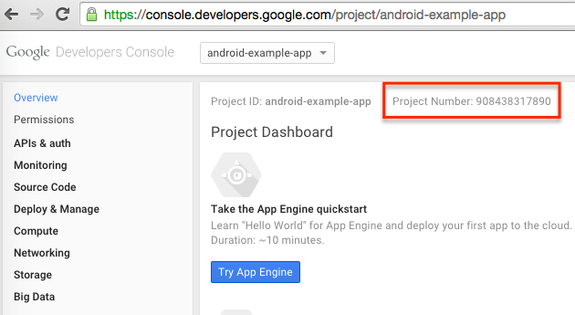
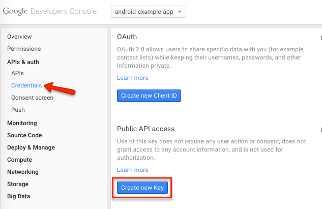
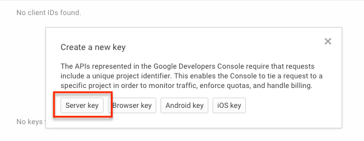
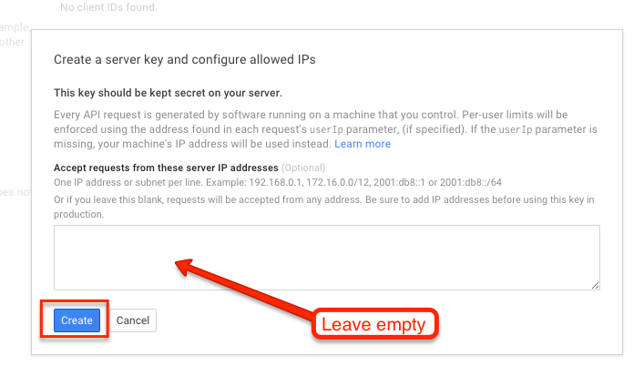
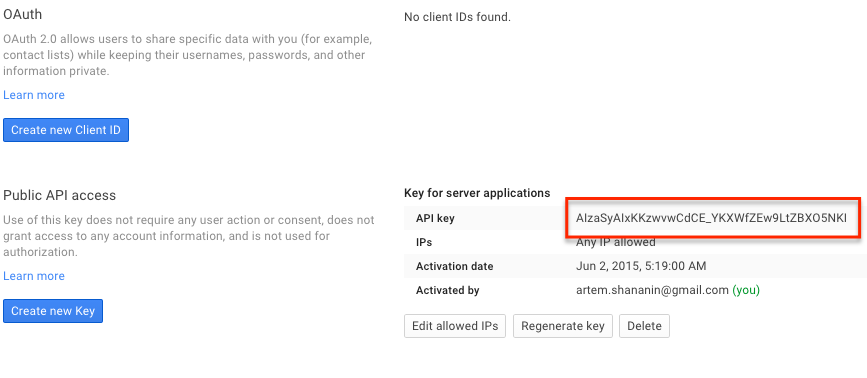

Website - Generating a GCM Push Notification Key
Connect your Google Cloud Messenger enabled website with Jeapie
STEP 1: Create a Google Project and save the "Project Number"
1.1 Create a project at https://console.developers.google.com/project for your app.

1.2 Select your Project and click on "Overview." Your project number should be located on this page.

Copy the "Project Number" from this page.
You will need to enter this into your app later when you follow the SDK guide.
STEP 2: Turn on both "Google Cloud Messaging for Chrome" and "Google Cloud Messaging for Android" APIs
2. Under APIs & auth>APIs, search for "Google Cloud Messaging for Chrome." Turn it on. You will need this for desktop notifications.
Search for "Google Cloud Messaging for Android" and turn it on. You need this so an Android Chrome browser can send system notifications to an Android user.
STEP 3: Create and save Server Key
3.1 Under "APIs & auth" > "Credentials", Click "CREATE NEW KEY".
3.2 Select "Server key"
 
3.3 Press the Create button.
IMPORTANT
DO NOT enter anything into the box.

3.4 Copy the "API Key." You will need it to configure your project with Jeapie

STEP 4: Send keys to Jeapie
Send Project Number and GCM server key to support@jeapie.com.
Configuration to send Chrome Website push notifications is complete!
Next step is to set up the Chrome Website SDK
- Follow our Website SDK HTTPS Installation guide if your website uses an HTTPS connection.
- Or follow our Website SDK HTTP Installation guide if your website is Non-HTTPS. (Uses an HTTP connection).